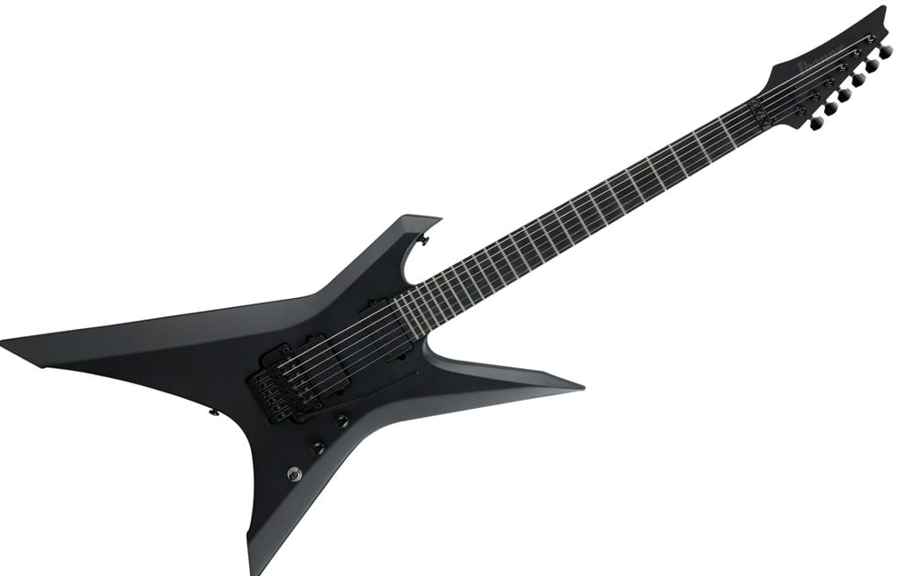

Cienka, płaska i szybka szyja Wizard Ibanez jest mocna i wytrzymała i oferuje nieograniczoną grywalność dla wymagających graczy.
Hebanowa podstrunnica wytwarza ciasne niskie i średnie zakresy z silnym atakiem w górnym zakresie i cechuje się szybką reakcją i bogatym sustainem.
Korpus Okume zapewnia jasny i solidny dźwięk. Przetworniki DiMarzio® D-Activator mają mocny, czysty i otwarty dźwięk z doskonałymi harmonicznymi wydźwiękami i bardzo zwartą reakcją niskich tonów.
Głowice maszyn Gotoh® zapewniają super precyzję, gładkość i minimalną bujność pleców. Konstrukcja mostka Edge Zero II ma niższy profil tremolo dla wygody gry i funkcję blokady kołków dla stabilnego strojenia.
Luminescencyjne boczne znaczniki położenia kropek ułatwiają graczom dostrzeżenie znaczników położenia podstrunnicy podczas gry na ciemnych scenach.
Cena:5699.99zł